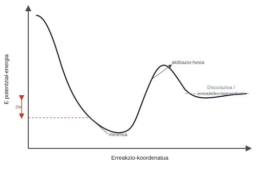
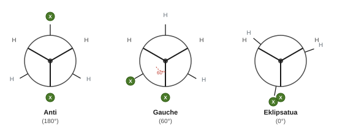
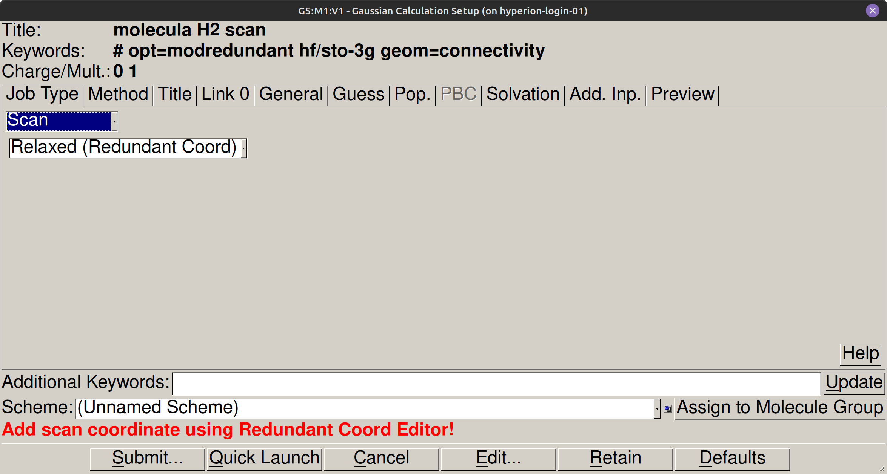
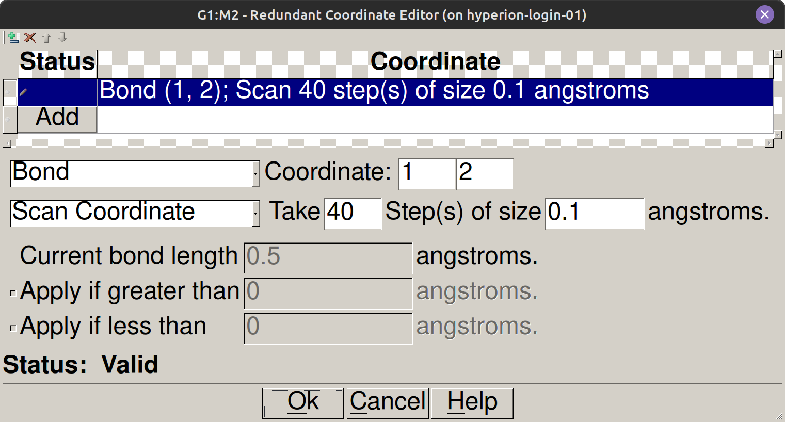

Energia potentzialaren gainazala#
Sarrera#
Lotura kimikoaren egonkortasuna eta molekulen lehentasun konformazionalak nukleoen posizioak aldatzean energia elektronikoa nola aldatzen denaren araberakoak dira. Born-Oppenheimerren hurbilketari esker, aldaketa horiek energia potentzialaren gainazal gisa irudika daitezke, Gaussianen bidez kalkulatutako miaketa geometriko sistematikoen bidez. Praktika honetan, hidrogeno-molekularen disoziazio-kurba aztertzen da, spin-egoera desberdinetarako, eta etanoaren deribatu halogenatuen angelu diedroaren errotazio-profila.
Helburuak#
\(\text{H}_2\) molekularen energia potentzialaren kurba eraiki, HF/STO-3G-rekin kalkulatutako nukleoarteko distantziaren (\(R(\text{H–H})\)) miaketa baten bidez, singlete eta triplete egoeretarako.
Oreka nuklearreko distantzia (\(R_{\text{eq}}\)) eta \(\text{H}_2\)-ren disoziazio-energia zehaztu, kalkulatutako balioak datu esperimentalekin alderatuz.
Dihaloetanoen angelu diedroaren miaketa konformazionala egin, anti eta gauche konformeroak identifikatzeko energia potentzialaren gainazalean.
Errotazio konformazionalaren oztopoak kuantifikatu, konformazio eklipsatuekiko energia-diferentzia ebaluatuz.
Kontzeptu gakoak#
Zer da energia potentzialaren gainazal bat?#
Born-Oppenheimerren hurbilketaren arabera, energia elektronikoa koordenatu nuklearren funtzio jarraitua da, sistema baten energia potentzialaren gainazala (EPG) definitzen duena:
Gainazal honen minimoak oreka geometrietako egonkorrei dagozkie, non nukleo bakoitzaren gaineko indarrak nuluak diren eta edozein deformaziok energia handitzen duen. Lehen mailako zela-puntuek ondoko minimoak lotzen dituzte eta erreakzio kimikoen edo aldaketa konformazionalen trantsizio-egoerak adierazten dituzte. Nukleoarteko distantzia handietan, energia potentzialak disoziazio-muga lortzen du, non atomoek elkarri eragiteari uzten dioten.


Singletea eta tripletea: zergatik da garrantzitsua spina#
Singlete egoeran, H₂-ren bi elektroiek spin antiparaleloak dituzte (multiplicitatea 1). Horri esker, espazioaren eskualde bera partekatu eta dentsitate elektronikoa bi nukleoen artean kontzentratu dezakete, elkarren arteko aldarapena pantailatuz eta lotura kobalentea egonkortuz energia-minimo batean oreka-distantzian. Triplete egoeran, berriz, spinak paraleloak dira (multiplicitatea 3) eta Pauliren bazterketa-printzipioak eragozten du bi elektroiak aldi berean nukleoarteko eskualdean egotea. Horregatik, tripletearen energia potentzialaren kurba erabat aldaragarria da ibilbide osoan, eta ez du lotura-minimorik aurkezten.
Oharra
Ikuspegi mekanokuantikotik, singletearen uhin-funtzio espaziala (\(^1\Sigma_g^+\)) simetrikoa da elektroien permutazioarekiko, eta horrek nukleoarteko karga pilatzea bultzatzen du. Tripletean (\(^3\Sigma_u^+\)), funtzio espaziala antisimetrikoa da eta nukleoarteko plano nodal bat aurkezten du, non probabilitate-dentsitatea nulua den. Elektroi-dentsitaterik ez dagoenez protoiak pantailatzeko, nukleoarteko aldarapenak distantzia orotan nagusitzen da.
Angelu diedroa eta analisi konformazionala#
Angelu diedroak lotura sinple zentral baten bidez lotutako bi talderen errotazio erlatiboa deskribatzen du, eta X–C–C–X sekuentzia osatzen duten lau atomoen bidez definitzen da, 0° eta 360° arteko tartean. Newmanen proiekzio batean, konformazio bakoitza angelu horrek zehazten du. Anti konformazioak (180°) ordezkatzaile bolumentsuenak posizio kontrajarrietan jartzen ditu, aldarapen esterikoak minimizatuz eta energia-minimo globala konfiguratuz. Gauche konformeroek (60° eta 300°) minimo lokalak osatzen dituzte, elkarrekiko aldarapen handiagoarekin. Kurban maximoak konformazio eklipsatuei dagozkie, eta horien gainjartzeak barne-errotazioko oztopoa zehazten du.


Prozedura#
1. zatia: H₂ molekularen EPG#
1. urratsa: H₂ GaussView-n marraztu#
GaussView ireki.
Zatiki-paleta flotagarrian, hidrogeno-atomoa (H) hautatu.
Erdiko 3D leihoan klik egin, lehen hidrogeno-atomoa jartzeko.
Sortutako atomoaren gainean bigarren klik bat egin, \(\text{H}_2\) molekula diatomikoa sortzeko, lotura sinplearekin.
2. urratsa: Miaketa-kalkulua konfiguratu (Scan)#
GaussView-ko menu-barran, sartu Calculate → Gaussian Calculation Setup.
Job Type fitxan, hautatu Scan aukera eta beheko goitibeherako menuan hautatu Relaxed (Redundant Coord).
Eskaneatze-koordenatua definitzeko, sartu Edit → Redundant Coordinates (edo sakatu koordenatu erredundanteen edizio-botoia).
Redundant Coordinate Editor elkarrizketa-koadroan:
Sakatu Add botoia.
Goitibeherako menuan hautatu Bond eta adierazi Coordinate atalean 1 eta 2 atomoak.
Hautatu Scan Coordinate ekintza motan eta finkatu eskaneatze-parametroak (adibidez, 40 urrats 0.1 Å-ko tamainakoak).
Sakatu Ok koordenatua baliozkotzeko.
Gaussian Calculation Setup leihora itzulita, Method fitxan hautatu:
Metodoa: HF (Hartree-Fock).
Oinarri-multzoa: STO-3G.
Karga:
0.Singlete egoerarako: Spin = Singlet (Multiplicity =
1).Triplete egoerarako: Spin = Triplet (Multiplicity =
3).
Title fitxan, idatzi:
H2 scan HF STO-3G.Additional Keywords fitxan, idatzi:
scan.
Parametroa |
Singlete egoera |
Triplete egoera |
|---|---|---|
Metodoa |
HF |
HF (ROHF) |
Oinarri-multzoa |
STO-3G |
STO-3G |
Karga |
0 |
0 |
Multiplicitatea |
1 |
3 |
Distantzien tartea |
0,5 Å-tik 4,0 Å-ra |
0,5 Å-tik 4,0 Å-ra |
Urratsaren gehikuntza |
0,1 Å (35-40 urrats) |
0,1 Å (35-40 urrats) |




3. urratsa: Kalkuluak gorde eta abiarazi#
Gaussian Calculation Setup leihoan, sakatu Submit botoia.
Gorde singletearen fitxategia izen honekin:
H2_singlete_scan.gjf__PROTECTED_BLOCK_24__PES/karpetan.Berretsi kalkulua hasteko elkarrizketa-koadroa.
Errepikatu prozesua multiplicitatea 3ra aldatuz eta gorde izen honekin:
H2_triplete_scan.gjf.Egiaztatu bi kalkuluak aurrera doazela exekuzio-barran.
4. urratsa: EPG GaussView-n bistaratu#
GaussView-n, ireki
H2_singlete_scan.logfitxategia File → Open bidez.Sartu Results → Scan menuan.
Bi dimentsioko grafiko interaktibo bat agertuko da, energia \(R(\text{H–H})\) distantziaren aurka erakusten duena.
Ireki aldi berean
H2_triplete_scan.logfitxategia, tripletearen kurba singletearen kurbaren gainean jartzeko ikusteko leiho berean.Behatu singletearen kurbako potentzial-zuloaren forma eta tripletearen kurbako zulo eza.
2. zatia: Dihaloetanoaren angelu diedroaren EPG#
Konformazio-eskaneatzea egingo da ondorengo hiru dihaloetanoentzat: 1,2-dikloroetanoa, 1,2-dibromoetanoa eta 1,2-diiodoetanoa. Prozedura berdina da hirurentzat; errepikatu, molekula eraikitzeko urratsean halogenoa bakarrik aldatuz.
1. urratsa: Dihaloetanoa marraztu GaussView-n#
Ireki leiho berri bat GaussView-n (File → New → Molecule Group).
Eraiki dihaloetanoaren molekula, karbono-katea hautatuz eta bi hidrogeno atomo halogenoz ordezkatuz alboko karbonoetan.
Aplikatu aurreko garbiketa geometrikoa Edit → Clean bidez.
2. urratsa: Eskaneatze diedroaren kalkulua konfiguratu#
Sartu Calculate → Gaussian Calculation Setup menuan.
Job Type fitxan, hautatu Scan.
Definitu barne-koordenatua Dihedral motakoa, lotutako lau atomoak hautatuz: \(\text{X–C–C–X}\).
Zehaztu eskaneatzearen angelu-parametroak:
Koordenatua: diedro \(\text{X–C–C–X}\).
Angelu-tartea: 0°-tik 360°-ra (10° edo 15°-ko urratsetan).
Method fitxan, konfiguratu:
Metodoa: HF.
Oinarri-multzoa: STO-3G.
Karga:
0.Multiplicitatea:
1(Singlete).
Title fitxan, idatzi:
Dihaloetano diedro scan HF STO-3G.
3. urratsa: Gorde, abiarazi eta egiaztatu#
Gorde fitxategia izen honekin:
dihaloetano_scan.gjf__PROTECTED_BLOCK_25__PES/karpetan.Berretsi kalkulua bidaltzeko Submit botoia sakatuz.
4. urratsa: Diedro-kurba ikusi GaussView-n#
GaussView-n, ireki eskaneatzearen irteera-fitxategia File → Open bidez.
Sartu Results → Scan menuan.
Identifikatu gutxieneko lokalak (gauche konformeroa) eta gutxieneko globala (anti konformeroa 180°-tan), baita tarteko errotazio-hesiak ere.
Bibliografia#
Gaussian 16, Revision A.03, M. J. Frisch, G. W. Trucks, H. B. Schlegel et al., Gaussian, Inc., Wallingford CT, 2016.
Atkins, P.; De Paula, J. Química Física, 10. ed.; Editorial Médica Panamericana, 2018. 11. kap. (Egitura molekularra eta energia potentzialaren gainazalak).
Clayden, J.; Greeves, N.; Warren, S. Organic Chemistry, 2. ed.; Oxford University Press, 2012. 18. kap. (Konformazio-analisia).
Szabo, A.; Ostlund, N. S. Modern Quantum Chemistry. Dover, 1996.
Urrunago joateko (aukerakoa)
:icon: rocket
Aukerako jarduera gisa, errepikatu etanoaren konformazio-eskaneatzea (\(\text{CH}_3\text{-CH}_3\)) teoria-maila berarekin. Kalkulatutako errotazio-hesia, 3 kcal/mol ingurukoa, nabarmen txikiagoa da dihaloetanoarena baino. Bi profilen konparazio zuzenak erakusten du nola ordezkatzailearen bolumenak, C–X loturaren polaritateak eta halogenoaren elektronegatibotasunak energia-minimoak desplazatzen dituzten eta errotazio-hesia igotzen duten.